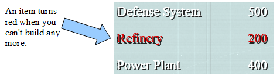
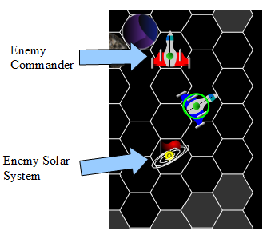

Heroes of Sword and Space Instructions
It is recommended that you leave the instructions open; just drag this tab to the other monitor.
It is recommended that you use Chrome.. The fonts look much nicer.
(Back to the main page)The Universe View
The universe view is where you manage your empire on a large scale. You can order your Commanders to explore the universe, tell your solar systems what to build, and attack enemy Commanders.
To select your Commander, click it; to deselect it, right click anywhere. When a Commander is selected, you can give it an order by clicking on a tile in explored space.
When you click a tile in explored space, the Commander plans a path there. Click the tile again to move the Commander. As the Commander moves, it scans nearby space and explores all unexplored tiles within a small radius around it.
Each Commander has a certain number of Action Points per turn that they can use to move around. Moving one tile costs one Action Point. Your first Commander has four Action Points per turn. You can continue to move each Commander until their Action Points are depleted. Press the "End Turn" button in the top right corner of the screen to proceed to the next turn.
The resource unit in this game is Gold. You use it to build ships and structures at your Solar Systems, and to recruit new Commanders. The purple object south of your first Solar System is a Mining Planet, which can greatly increase your income. Move your Commander onto the Mining Planet (by selecting your Commander and clicking twice on the Mining Planet) to colonize it. You can also colonize unoccupied Solar Systems this way. When you move your Commander off of Mining Planet, it will be adorned with your empire's flag. This means it belongs to you and is producing Gold.

You can recruit additional Commanders at your Solar Systems. Right click to deselect any selected Commanders, and then left click on your Solar System to recruit a Commander there. You can select your new Commander to open up its stats box. The box depicts the fleet of ships under the Commander's command. It also shows you the Commander's Attack Bonus and Defense Bonus. In combat, these bonuses make your ships do more damage and receive less damage respectively.
When you recruit a new commander, its fleet consists of a random number of Fighters. You can build more ships for your new Commander's fleet at your Solar System.
The Solar System View
The Solar System view lets you build buildings on Solar Systems that you own and add ships to your Commanders' fleets. The box in the top left of the screen shows you the fleet of the Commander who's visiting the Solar System. You can use the arrow keys to make your solar system spin around. You can press "Open Planet Menu" at the bottom left to open up the build menu.
The left pane lists ships and structures that you can build. A description appears on the right pane when you mouse over an item.
The Ship Yard tab lets you add ships to your Commander's fleet. Any combat ships you build are automatically and immediately added to the Commander's fleet. Each Solar System can only build a limited number of ships. At the beginning of the game your planet can only build one of each type of ship. Every year (12 turns) each Solar System replenishes its supply of ship-building materials and can add another batch of ships to your Commanders' fleets.
The Miner is the only non-combat ship you can build. It does not join the Commander's fleet; it sits invisibly at your Solar System and increases your Gold income. You can exit the build menu and press "Leave Solar System" to get back to the universe view.
The Battlefield View
It's a big universe, and at some point you're liable to run into enemies. You can attack an enemy Commander or Solar System by moving one of your Commanders onto it. The Battlefield View will open and combat will commence.
At the top left and right corners of the screen there are two boxes that show both your and your opponent's Attack Bonus and Defense Bonus. If you mouse over one of your or your opponent's ships, the box will also display that ship's stats. In between, there's a cool-looking green space radar and some some text commentary that describes what happens during the battle.
You control your ships in stacks. You get one stack for each type of ship, and you move it and attack with it as a unit. When a stack is attacked, only the top ship in the stack receives damage. When the top ship is destroyed, the next ship starts receiving damage, and so on. Ships move based on their Speed stat; the fastest ships move first in each turn. If you and the enemy have ships with the same speed, the attacker moves first.
Each ship gets one action per turn: it can move to a filled-in tile or it can attack. Click a filled-in tile to move there, or click an enemy to attack them. Some ships have ranged attacks and some have melee attacks. If a ship has a melee attack, a sword appears when you mouse over an enemy in range and you can pick which directiont to attack it from.
You cannot retreat. Once you enter a battle, you either destroy all of your opponent's ships or lose your Commander and fleet.
Winning the Game
You win the game by conquering the universe. You do that by killing all three AI players. Good luck.
Back to the main page